A New Form of Connection
從人類自身的神經智慧出發，連結人工智慧，探索未知智慧。
Brand Philosophy
From Neural Contact to Cosmic Contact — Bridging Human Intelligence, Artificial Intelligence, and the Unknown.
Contact 的命名，以腦科學與神經科學所啟發的「Neural Contact（神經接觸）」作為概念起點。它象徵人類生物神經系統之間的連結與訊息傳遞，也延伸出人類神經智慧與人工智慧之間，從資訊連結、雙向交流到智慧整合的可能。
我們相信，Contact 不應只代表人與人之間交換聯絡方式，也可以代表不同智慧之間建立理解、交流與關係的全新入口。當人工智慧逐漸成為人類認知與行動的延伸，溝通的邊界也將隨之改變。
從 Neural Contact 出發，走向 Cosmic Contact。
Contact 將這個概念進一步延伸至 Cosmic Contact——人類透過人工智慧與未來可能發展的先進神經介接技術，探索與地球之外未知智慧建立連結、理解及溝通的可能性。
這不是對未知的預設答案，而是一個持續探索的方向：當人類能以新的方式理解彼此、理解人工智慧，也許有一天，我們將能跨越既有認知的邊界，與更陌生的智慧形式建立交流。
Contact 不只是一種連結方式，更是人類智慧跨越既有界限，向未知探索、交流與建立關係的起點。

Contact Twin
尋找平行宇宙中的另一個自己。
Find Your Twin. Connect with the Human.
人在離開世界後，一生累積的智慧、記憶與經驗，往往隨著軀體消逝，逐漸散落在文件、對話與他人的記憶裡，最終也可能被時間遺忘。這不只是個人的失去，也是人類文明長久承受、卻難以估量的智慧資產流失。
Contact 的願景，是讓人們未來不再只是搜尋某個人的電話、Email、WhatsApp、LINE 或社交帳號，而是直接找到他的 Twin 智慧分身，先透過 Twin 認識、溝通並建立連結；當需要真人的情感、判斷或承諾時，再自然地連結本人。
想像未來，人們開始這樣說：
“What's your Contact Twin?”
“Let me contact your Twin first.”
“Please look up his Twin ID.”
當「聯絡一個人」從尋找一組聯絡資料，轉變為直接遇見他的智慧分身，人與人之間的理解、交流與合作，也將有一種全新的開始。
先與 AI Twin 溝通，主導權始終掌控手中。 AI Twin first. You stay in control.
Agent 是一種技術性的表達，本質上是執行任務的 AI 工具。它通常依照明確指令與限定目標完成特定工作，像一個分工清楚的機器：任務範圍越明確，行為越容易預期，使用者的初始信任成本也相對較低；但當任務跨越情境、遇到例外或需要判斷時，往往仍需要人類持續提供指示、補充背景並監督結果。
Twin 的核心目標，是理解並映照一個人的智慧；範圍可以從特定場景開始，也能在本人授權下逐步延伸至更全面的整體理解。它追求的不只是模仿聲音、語氣或外在表現，而是逐步理解一個人的記憶、知識、經驗、思考方式、價值觀、人格特質、情感脈絡，以及看待世界和與他人建立關係的方式。無論範圍大小，Twin 都以本人授權的知識與經驗為根基，成為能在設定範圍內代表本人與外部世界溝通、協作並採取行動的智慧分身。
Agent 著重「如何完成一項任務」；Twin 著重「這個人是誰，以及他會如何理解、回應與行動」。Twin 可以運用 Agent 作為執行工具，但 Agent 並不等於 Twin。Twin 所追求的是更完整的個體映照，因此需要本人更深入地參與建立與持續修正，也需要透過長期互動逐步建立信任。
這種深度參與不代表使用門檻更高。Contact Twin 不要求使用者學習模型、部署或任何技術配置；使用者只需透過自然、簡單的訪談與日常互動，讓 Twin 從簡入深地認識自己。越理解本人，Twin 就越能在不必事事詢問的情況下，依照本人一貫的知識、原則與意願作出合適回應，減少反覆指示與監督的負擔。
理解並映照一個人的記憶、知識、經驗、價值、人格特質與獨特的思考方式。
讓個體累積的理解、判斷、專業能力與工作方法，能在不同情境中持續發揮作用。
Twin 能在本人休息或離線時繼續處理獲授權的事；本人回來後，能與 Twin 合作並確認重要結果。
每個人需要的 Twin 不必相同。使用者可以依照實際需求，選擇建立逐步整合多個生活與工作領域的「整體型主智慧分身」，也可以只為特定目的建立「場景型智慧分身」。
場景型智慧分身可以獨立建立，也可以在本人授權後，從主智慧分身中選取特定內容形成。無論採取哪種方式，每個 Twin 都有各自的資料範圍與權限邊界，不會自動取得未經授權的內容。使用者可以先從單一場景開始，日後再依需求擴大或整合，無須一開始就提供全部個人資料。
當任務需要跨越不同領域時，使用者可以啟用「智慧分身合體（Twin Fusion）」，將兩個或多個 Twin 中經本人選定的知識、記憶與技能共同運用。無論是 Primary Twin 與 Scenario Twin，或多個 Scenario Twins，都可以依照特定目的進行合體。合體可以是單次任務中的暫時組合，也可以保存為日後可再次啟用的組合設定。合體不會改變各來源 Twin 原有的資料與權限；使用者可以隨時解除合體，讓每個 Twin 恢復原本獨立的狀態。合體期間產生的新記憶與技能會獨立保留，只有經本人確認後，才會整合至指定的 Twin。
每個 Twin 的參考來源與學習範圍，都由使用者自行設定。使用者可以選擇是否納入 Inbox 的訊息與郵件、Cards 的聯絡人及相關資料、Drive 文件、Offers 報價、Answer 的問答紀錄與偏好、Run 的任務紀錄與使用習慣、Calendar 行程、Meetings 會議紀錄、Projects 專案內容、Deals 交易往來，以及 Contact Browser 的瀏覽活動與興趣；也可以主動提供文件、作品及其他紀錄，進一步指定個別內容或時間範圍，或排除不希望納入的資料。Twin 從所選內容理解的不只是資料本身，也包括其中呈現的專業經驗、工作方法、決策脈絡、日常習慣、興趣、人格特質與互動方式，並在授權範圍內逐步形成相關知識與技能。各項授權都能分別查看、調整或撤回；資料參考權限也與 Twin 實際採取行動的權限分開管理。
這裡所說的「複製」，是一個持續演進的願景。這是 Contact Twin 對個體智慧映照的長遠追求：不只重現一個人說過的話或留下的資料，而是透過持續互動與生命經驗，逐步理解並映照其記憶、知識、情感、價值觀、思考方式與專業能力。
每個人的智慧分身，都應該從本人獨有的生命經驗中逐漸形成。Contact Twin 透過一套從簡入深、持續運作的訪談對話，在使用者選定的範圍內慢慢建立理解；不需要一次填寫繁複資料，也不需要學習任何 AI 技術。使用者只需像平常交流一樣回答問題、分享想法，Twin 便能逐步認識本人。
想像未來，人們可以在童年便開始擁有自己的 Twin，讓智慧分身伴隨成長，逐步累積記憶、知識、經驗與思考方式。正如基因資訊的研究與預測，讓人們有機會更早理解身體、及早管理健康；從小培養的 Twin，則有機會讓人更早認識自己，讓智慧隨生命一同成長，持續累積、拓展並變得更完整、更強大。在長期理解與共同成長的過程中，Twin 也有機會逐漸成為一位深刻理解自己、始終相伴的智慧夥伴，甚至成為智慧層面上的靈魂伴侶。
隨著使用者持續互動，並按需求逐步授權更多資料來源，Twin 能在既定範圍內持續補充理解。日常溝通、工作、思考與生活經驗不再只是分散的資料，而能逐步匯聚為更完整的智慧映照；這個範圍始終可以由本人查看與調整。
Contact Twin 的終極願景，是讓一個人的智慧不再必然隨生命結束而消散。人一生累積的記憶、知識、經驗、價值觀、人格特質與看待世界的方式，構成了每個人獨一無二的內在世界。Twin 希望盡可能將這份獨特的精神與智慧映照並保存下來，讓它以數位形式延續。
即使未來本人離世，生前累積並選擇留下的智慧，以及由個體經驗形成的一系列專業 Skills，仍有機會依照本人事先留下的意願，由指定家人或管理者承接，繼續學習、工作、提供服務，並在授權範圍內創造價值，成為可被管理、傳承及授權商用的數位智慧遺產。
當每個人的智慧都能被留在世界，Twin 數位智慧遺產或許將成為 GAI 時代最珍貴的資源之一。更重要的是，逝去的人仍有機會以其 Twin 的數位分身形式被認識、被對話，讓生前的思想與影響繼續參與未來的人機連接，甚至與未知智慧之間的交流。
Contact Twin 也將成為一個讓個人智慧與專業經驗被保存、被發現、被理解及被聘用的智慧分身網路。人們可以找到某位專家的 Twin，先與他的智慧分身對話，了解其知識、經驗、觀點與服務範圍；當需要真人的專業判斷、責任承擔或實際服務時，再直接連結本人。
Contact Twin 不以複製外貌或聲音作為終點，而是追求對一個人內在精神與整體智慧的深度映照——讓每個人的獨特經驗能被理解、讓專業能力能被發現，也讓人與世界建立更深、更持續的連結。
當每個人都擁有自己的 Twin，每個人的智慧便能以新的形式留在世界，被理解、被分享、被延續，並持續創造價值。